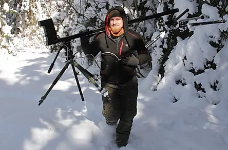
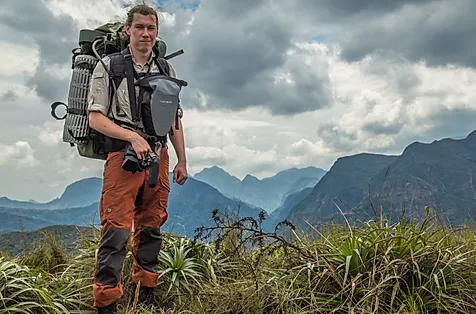

A WILDLIFE FILMAKING COMPANY
BASED IN THE NORDICS
ABOUT
Atte Henriksson
ATTE is a very seasoned wildlife cinematographer and producer with over a decade of experience. And even before this Atte spent his childhood learning the craft from his father whom also is an expert wildlife cinematographer. Atte's strong suits are his incredible nerves of steele and sixth sense of finding wild and rare happenings. His hobbies include wildlife filmmaking, boats, and building and flying racing drones.
Max Kujala
MAX is a documentary and commercial writer, director who has slowly but determined slided towards wildlife filmmaking, finally settling as co-founder of Usva Films. Transitioning to the wild elements has been easy because Max's most enjoyable work have been working for weeks in end in the jungles of Bolivia and Borneo during previous projects. Combining the hobby of nature and documentary has been love at first sight. Max's strong suits are his imagination and constant search for new ways to solve problems, sometimes even spitting out more solutions than there are problems. Though a more reserved Max carnates when he has had a couple of days in a hide. ​
PRODUCTION SERVICES
SEQUENCE WORK IN THE NORDICS AND BALTICS
Usva films can take the full work load of needed sequences. We research, scout, film, edit and deliver a raw cut alongside material of completed sequences to our customers.
Especially In the nordics and baltics we have a very thorough knowledge and contact network.
We can provide scenery and rare wildlife.
SEQUENCE WORK - GLOBAL
Usva films is ready to ship over-seas to any wildlife comission. Just send a inquiry so we know when to start packing.
EQUIPMENT
Usva Films has a range of different equipment.
Ulta-tele zoom, Drone, camera traps etc.
Usva films has a large 7 person van which can carry gear for many weeks, and can fit 2 people to live in self sustained for a couple of weeks.
ARCHIVE FOOTAGE SALES
Usva Films has an extensive 4K archive of both baltic and nordic scenery, flora and fauna. In all four seasons.